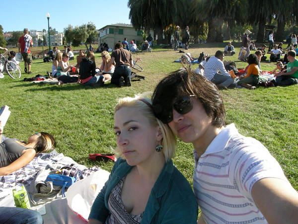
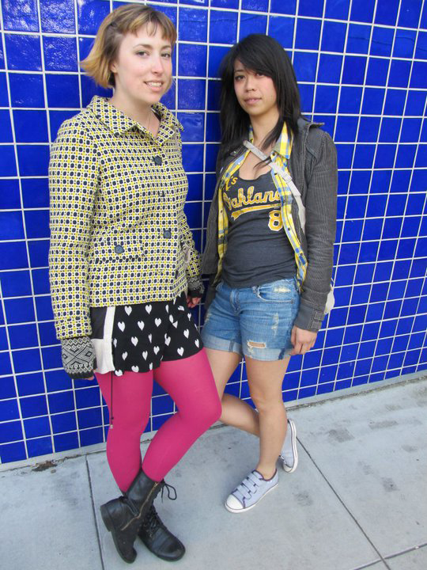
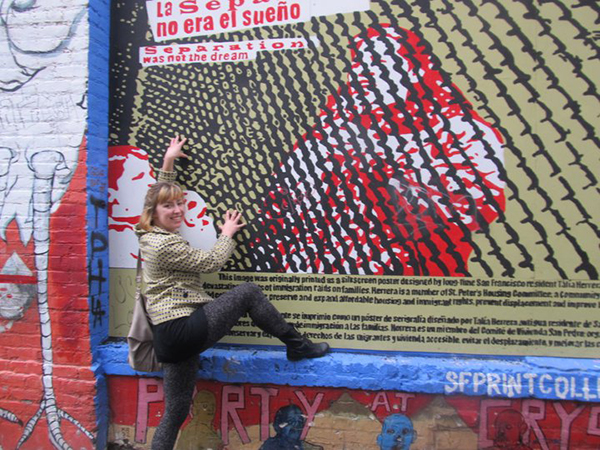
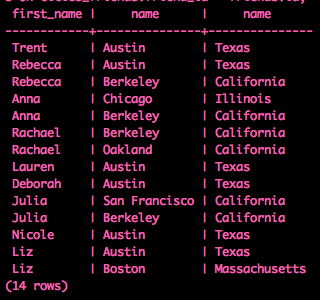
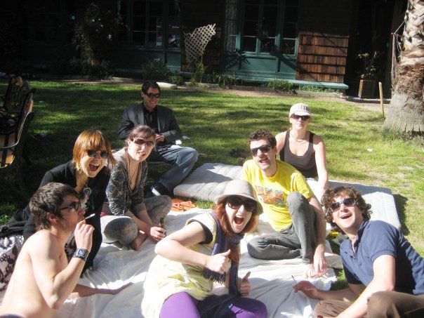
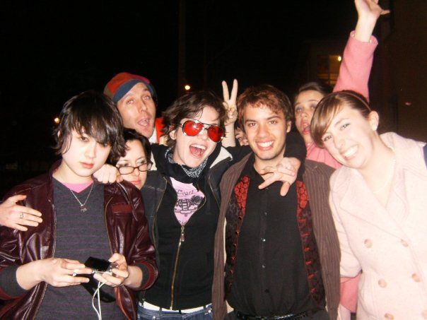
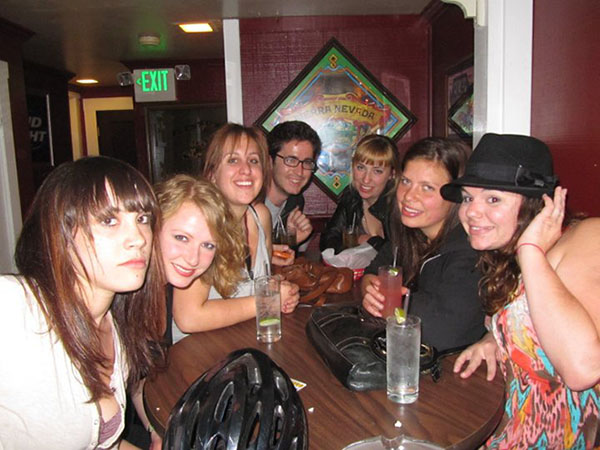

Blog Posts
These last few days have been really rough. It feels good to look at some beautiful images:
A lot of my friends have been sharing articles that hate on San Francisco hardcore lately. Although I agree with some of the points in these articles (tech people are driving up rents and overcrowding the city, the 'vibe' of the city is different now), I think that there may be some overreaction. Granted, it has been some years since I lived there, and I was only technically in the city of SF for one year, but I did have a lot of fun when I lived there and love the city.
When I visited again last October, I had a great time, and it brought back so many crazy memories.
My first apartment was right in the heart of the Mission, at 24th and Alabama. The Mission was a pretty hip neighborhood at that time, but now I think it has become very expensive the the gentrification is intense. It's a colorful neighborhood with lots of street art, bars, art galleries, shops, and really great restaurants. The Mexican food is amazing. I liked the area, but my first living situation ended up being a nightmare.
Without telling me, the girl who was renting the room to me filled the other room with this creepy, 40-year-old, cokehead alcoholic guy with two disgustingly overweight cats. One of cats was so fat and lumpy that I would feel like vomiting when I saw her. His room smelled terrible. I would often come home to him drinking 211 Steel Reserve tall cans and blowing lines on a plate in the kitchen or some other surface. Then, he would somehow fail to pay rent. Ummm maybe cool it on the coke for a month, bro?
The apartment got infested with fleas and there was a pigeon problem. I asked the landlord to fix things, and he texted my roommate that he wanted to strangle me. He also would text my roommate (who was 21 years old) things like 'I just saw you get out of that shower and it was beautiful'. Creep.
After that, I moved to the north slope of Bernal Heights, which was just within stumbling distance of my favorite bars in the Mission, so I loved it. I could easily ride my bike to Dolores Park, where I would waste many days just getting shitfaced in the sun.

I loved to get Bi-Rite soft-serve ice cream or lollipops and eat them in the park.
All I cared about when I lived there was partying, and SF definitely provided plenty of resources for doing that. One resource that I frequented was the Phone Booth, which was a bar notorious for pouring extremely strong (and also CHEAP) drinks. I wasted a lot of nights there, because I could get wasted off of only two drinks. (I think every time I dared to have three drinks, I literally BLACKED OUT)
I had a lot of interesting casual relationships, including polyamorous and queer ones. I remember really loving my friends, and it was never weird that I had sex with them. Like, most of them... sometimes more than one of them at a time. SF is relatively queer-friendly (but not as much as one would think... my roommate once complained that she felt uncomfortable when she came home to see my male friend wearing one of my dresses). Many of my friends were beautiful and really had unique style. People in SF know how to dress.


In addition to having beautiful people who have unique style, SF itself is beautiful. As long as you don't look too closely or inhale the urine smell too strongly, you can see a lot of beauty. Sometimes, I'm a little bummed that things got so dark there that I felt forced to move away, but I'll have to reflect on that another time.

It has been about a year since I first decided to learn to program, and I've already had great success. I have a real tech job now, doing QA Engineering, so I get to work with developers every day. I'm trying to learn more and more in the hopes of moving to dev one day. Today, I'm remembering my beginnings.
When I first learned to program, I started with Ruby, which might be a little different from most people. Most people probably start with HTML/CSS and web fundamentals. I think doing this top-down approach helped me, because it taught me not to be afraid of not understanding something fully right away, which I think is important when learning to code.
I also started learning how to write SQL queries using PostgreSQL. PostgreSQL was a great object-relational database management system for me to start with, because the queries are done on the command line. My friend gave me a practice database of cities and states. I also built a table of my friends and their ages. From just that, I learned how to build a new table that linked my friends with the cities they lived in or were from.
Here was the query I used:
select
first_name,
last_name,
cities.name,
states.name
from states
INNER JOIN cities
ON states.id = cities.state_id
INNER JOIN cities_friends
ON cities.id = cities_friends.city_id
INNER JOIN friends
ON cities_friends.friend_id = friends.id;
The table I made looked like this:

After that, I became pretty obsessed with Ruby. I practiced it on Codecademy and a few other sites every day. Then, I started trying to actually put it to use. For my first Ruby program, I created a program that chose a random city from my database and returned the name of the city and "... is where I'm going for spring break, baby!" Here is my code:
require 'pg'
connection = PG.connect dbname: 'meredithbayne', host: 'localhost'
random_place = connection.exec 'select c.name, s.name from states as s inner join cities as c on s.id = c.state_id order by random() limit 10'
first_random_place = random_place[0]
puts first_random_place['name'] + ' is where I am going for spring break baby!'
In order to make this work, I had to download and install a PG gem so that I could connect to PostgreSQL. I learned all of this simply by Google-ing things and reading Ruby docs. It was so fun to see it finally working!
Now, I'm focusing more on front-end, but I've been thinking about Ruby a lot and hope to get back into it soon.
Michael Alig is out of prison and already partying with a shitload of Club Kids. WHY AM I NOT THERE?
Dear Michael Alig,
Please invite me to party with you. I have read and watched 'Party Monster' countless times. I've watched YouTube videos of you on talk shows in full club kid gear. I've dreamed of you and James St James. I even went through a phase of heavily using Special K in your honor. Contact me. THANKS!
Because of the tragic overdose that left John Gibson (who I knew as 'Candy John' because of his raver kid persona) braindead, Cloyne Court co-op in Berkeley is closing, removing all residents, and re-opening as a 'substance-free' dorm.
This event made me reflect on my time there, which was filled with pills and powders, glitter, spandex, bottle-breaking, nudity, public urination, and just general insanity. When I first moved in, it was summer, which was a little tame. However, no one blinked an eye when I screamed "Let's buy hella blow and then break shit!". I did my hallway cleaning workshift naked every time to get double the hours. I streaked through house meetings. My friend Katie and I wandered the streets in full BDSM gear, with me guiding her on a leash. We took molly and then just lay in our friend's tempur pedic mattress for hours butt-naked, drinking Wyder's Pear Cider and doing Whip-Its.
I moved down the street to Casa Zimbabwe for a semester, but I missed Cloyne so much that I had to move back. On my move in day, I got all of my stuff moved for me in under an hour, because I just went to to common room and yelled "Anyone who helps me move a box gets a beer and a line!"
We did do a lot of drugs, for sure, but we also were constantly in each other's lives. I struggled with health problems throughout college, and, because I lived at Cloyne, I could always rely on getting a ride to the doctor or somebody to cheer me up while I waited for test results or a prescription. I made friends that I could rely on, who were always there for me. Actually, some of them still are in my life.

My personal drug use did escalate over the years that I lived in the co-ops. I would take any pill or drink any liquid handed my way, without questioning. I have a lot of memories of just being in a haze, screaming, breaking bottles, stumbling into walls. My friends and I would play this game called 'whiskey slap'. To play, you would take a shot of whiskey (usually actually a swig straight from the handle), and then your friend would slap you in the face. We would get kicked out of bars for going and ordering our own pitchers of beer and trying to drink straight out of them (illegal in California). Things weren't so silly and innocent anymore. Many of us developed full-fledged addictions (I am included in this group).

I know Gibson was the same way. I remember watching him DJ during a party while doing Whip-Its. Of course, I didn't think anything of it, because I was getting just as fucked up all the time.
When Gibson overdosed and we heard the news that he would be permanently brain damaged, the reaction was generally denial. "How could he have OD'd just on coke and ketamine?" "There MUST be something else at play." "We all do that many drugs all the time, and we're fine." "I heard he also took Valium" "I heard he also took opiates". We just couldn't understand it.
I wish I could say that incident inspired us to clean up our act, but it did not. Shortly thereafter, I was kicked out of the Berkeley Student Cooperative for drunk and destructive behavior. When I moved out, it was a shock adjusting to the outside world. As the months and then years passed, Cloyne seemed more like this weird place very far away. The things I did there did not seem real. Cloyne will be lodged in my memory as this strange limbo I was in for a few years.
Despite the insanity, I made friends at Cloyne that I'll have for life, I hope.

I've been listening to the SOHN album a lot. There are so many great songs, but 'Artifice' stands out as this semi-anthem I can blast over and over without getting tired of it.